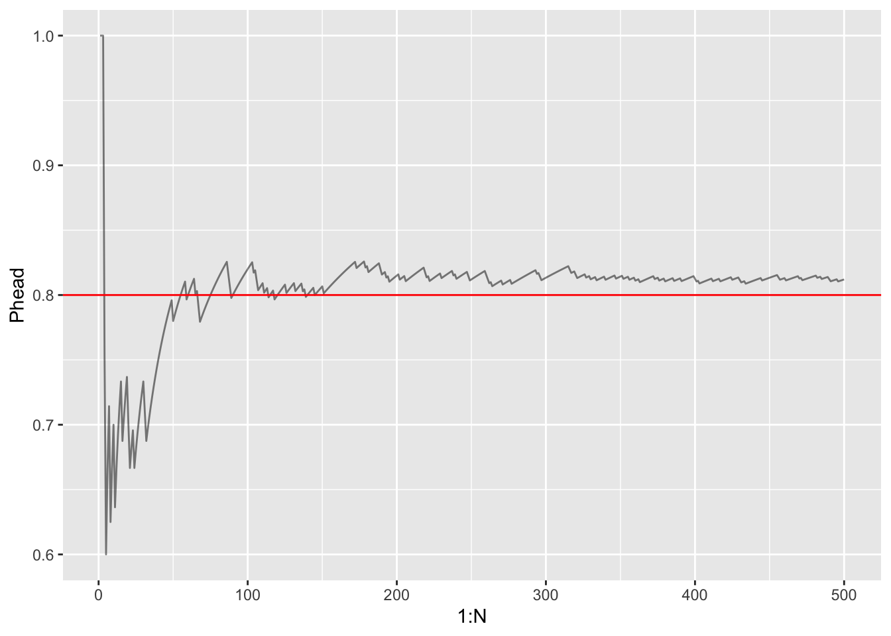
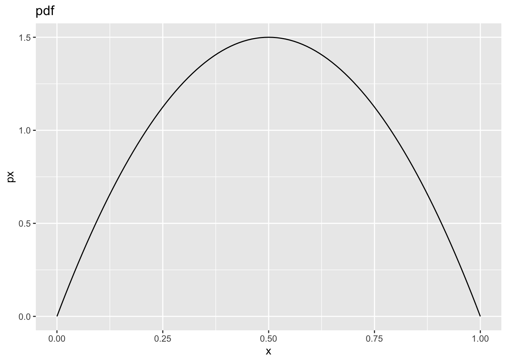
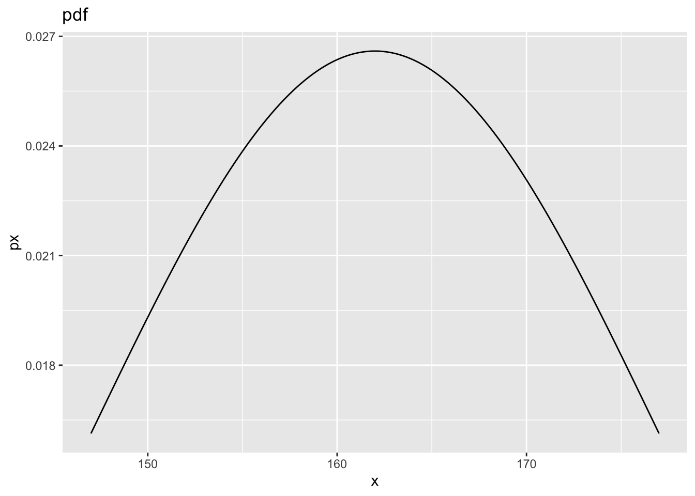

Chapter 3 Intro to Probability
3.1 Exercise 3.1
library(tidyverse)
set.seed(123)
# Number of coin flips
N <- 500
p <- 0.8
flips <- sample(x=c("H", "T"), prob=c(p, 1-p), size=N, replace=TRUE)
Phead <- cumsum(flips=="H") / (1:N)
ggplot() +
geom_line(mapping=aes(x=1:N, y=Phead), alpha=0.5) +
geom_hline(mapping=aes(yintercept=p), color="red")
3.2 Exercise 3.2
A. \(P[X=10] = \frac{8}{48} = \frac{1}{6}\)
B. \(P[X=10 or X=Jack] = \frac{1}{6} + \frac{1}{6} = \frac{1}{3}\)
3.3 Exercise 3.3
dx <- 0.01
x <- seq(0, 1, dx)
px <- 6*x * (1-x)
ggplot()+
geom_line(mapping=aes(x=x, y=px)) +
labs(title="pdf")
## [1] "The area under the curve is approximately 0.9999"- \[\begin{align*} \int_0^1 6x(1-x) dx &= \int_0^1 6xdx - \int_0^1 6x^2dx \\ &= 3x^2 \rvert_0^1 - 2x^3 \rvert_0^1 \\ &= 3 - 2 \\ &= 1 \end{align*}\]
C. Yes, it satisfies equation 3.3.
D. The maximum value of $p(x) = 1.5
3.4 Exercsie 3.4
A. and B.
mu <- 162
sigma <- 15
dx <- 0.01
x <- seq(mu-sigma, mu+sigma, dx)
px <- 1/(sigma * sqrt(2*pi)) * exp(-((x-mu)/sigma)^2/2)
ggplot()+
geom_line(mapping=aes(x=x, y=px)) +
labs(title="pdf")
# Approximate Integral
area = sum(dx * px)
paste("The area under the curve is approximately", round(area, 2))## [1] "The area under the curve is approximately 0.68"3.5 Exercise 3.5
\(P[grade=1st] = 0.2, P[grade=6th]=0.2, P[grade=11th]=0.6\)
Conjoint Table
| Grade | Ice Cream | Fruit | French Fries |
|---|---|---|---|
| 1st | 0.06 | 0.12 | 0.02 |
| 6th | 0.12 | 0.06 | 0.02 |
| 11th | 0.18 | 0.06 | 0.36 |
Grade and favorite food are independent if \(P[\text{favorite food | grade}] = P[\text{favorite food}]\)
\[P[\text{ice cream} | 1st] = 0.3 \ne P[\text{ice cream}] = 0.36\] \(\therefore\) Grade and favorite food are not independent.